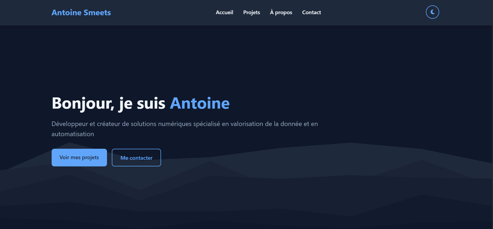

Vibe coding d'un portfolio


Présentation du projet
Vibe codé un portfolio en HTML, CSS et Javascript visant à minimiser la maintenance tout en offrant une mise à jour automatique de la section projets à l’aide de fichiers en markdown et Github.
Objectifs principaux
- Éliminer la dépendance aux CMS : Remplacer Wordpress par une solution légère
- Automatiser les mises à jour : Synchronisation automatique via GitHub Action
- Simplicité du workflow : Utilisation de fichiers en markdown pour une gestion simplifiée du contenu
Fonctionnement technique
Le système repose sur une architecture simple :
-
Création de contenu :
- Rédaction des projets en markdown
- Push des modifications vers le dépôt GitHub
-
Automatisation :
- GitHub Actions déclenche la reconstruction du site
- Déploiement automatique sur le serveur FTP
-
Stack technique :
- Trae IDE : Environnement de développement assisté par IA
- Claude Sonnet 3.7 : Modèle LLM pour le "vibe coding"
Particularités innovantes
Ce projet se distingue par son approche hybride :
- Vibe Coding : Développement en collaboration constante avec l’IA
- Auto-correction : Combinaison des suggestions IA et de l’expertise humaine
- Design évolutif : Structure permettant d’ajouter facilement de nouvelles sections
Problèmes rencontrés et solutions apportées
Limitations du modèle IA
Le LLM Claude Sonnet 3.7 a grandement facilité la génération de code, mais certaines spécificités n’étaient pas toujours parfaitement prises en compte par l’IA. Certaines erreurs de syntaxe ou des comportements inattendus sont apparus dans le design et dans la mécanique de mise-à-jour.
Solution :
Grâce à mes connaissances en HTML et CSS, j’ai pu effectuer un debugging manuel des éléments problématiques. Cette phase de correction a complété efficacement le travail du modèle pour garantir un résultat conforme aux attentes.
Gestion du contenu Markdown dynamique
La conversion des fichiers Markdown en pages statiques devait être fluide, mais intégrer certains formats ou éléments personnalisés a parfois causé des incohérences dans le rendu final.
Solution :
J’ai revu la mécanique et valider le code HTML et JavaScript généré par l’IA en y apportant certaines modifications afin de résoudre l’ensemble des problèmes afin de gérer correctement les différents cas d’usage et formats
Code superflu
Après plusieurs itérations sur le code, l’IA ne retire pas forcément les éléments qui ne sont plus utilisés, notamment dans le code CSS.
Solution :
Prévoir une session de nettoyage du code CSS pour l’alléger.
Avantages clés
Maintenance réduite :
Aucune mise à jour de plugins ou de sécurité à gérer
Performance optimale :
Temps de chargement réduits grâce au site statique
Flexibilité :
Modification du design ou du contenu sans infrastructure complexe
Améliorations possibles
- Automatisation de la rédaction des fiches projets via n8n et LLM.
- Nettoyer le code des éléments non-utilisés.